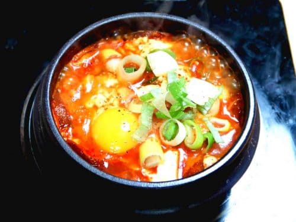

Sundubu Jjigae

Description
This is a soft tofu stew that is very versatile in what you would want to put inside the soup.
The soup itself is a rather simple base that can have additions to your liking.
Ingredients
- 8 large dried anchovies, heads and guts removed
- 5 ounces of radish, peeled, washed, and sliced thinly
- dried kelp (6 x 4 inch piece)
- 2 tablespoons Korean hot pepper flakes (gochugaru)
- 1 teaspoon toasted sesame oil
- 1 teaspoon vegetable oil
- 1/2 cup pork belly (or any cut of pork: 2.5 ounces), cut into small pieces
- 1/4 cup chopped onion
- 1 clove minced garlic/li>
- 1 green onion, chopped
- 1/2 cup well-fermented kimchi (4 ounces), chopped
- 1/2 teaspoon sugar
- 1 tube of soft tofu (sundubu)
- 1 egg
Steps
- Put dried anchovies, radish, dried kelp, and 4 cups of water in a pot. Cover and boil over medium high heat for 10 minutes until it starts boiling.
- Reduce the heat to low and boil another 20 minutes
- Remove from the heat and strain. It will make about 2 cups of stock.
- Combine the hot pepper flakes and the sesame oil in a small bowl and mix well.
- Heat up a 3 cup earthenware pot (ttukbaegi) on the stove over medium high heat for about 3 to 4 minutes. If you use a small heavy pan or pot, it will take less.
- Add the vegetable oil, onion, and garlic. Stir it with a wooden spoon for 1 minute.
- Add the pork. Stir for 3 minutes until the pork is no longer pink.
- Add kimchi and keep stirring for a minute. Add 1/2 cup anchovy stock. Cover and cook for 7 minutes over medium heat.
- Add the salt and the sugar and mix well.
- Cut the tube of soft tofu into half and squeeze it out into the pot. Gently break up the tofu with a wooden spoon. If you want, add a few tablespoons of stock.
- Put the hot pepper mixture on top and spread it with the spoon.
- Crack the egg and put it on top, in the center of the stew. Let it bubble and sizzle for 1 minute.
- Sprinkle with the chopped green onion and serve with rice and a few more side dishes.
Home